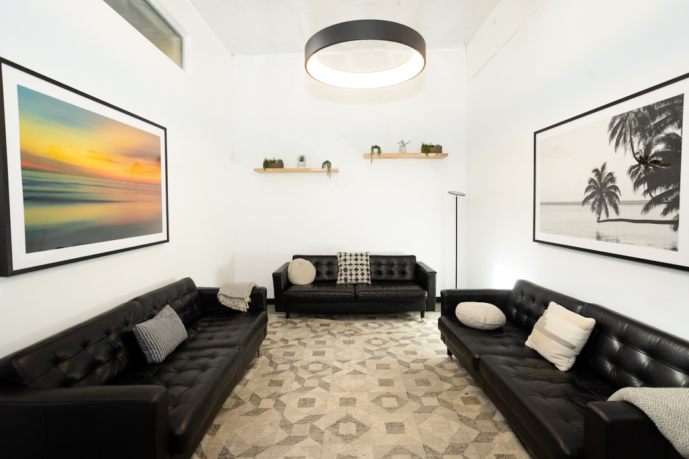

Come Psicologi e Liberi Professionisti Possono Trasformare il Loro Sito Web con SiteEngine Pro

Rivoluzione Digitale per Psicologi, Medici, Avvocati e Liberi Professionisti: Come Superare i Limiti dei Siti Vetrina con SiteEngine Pro
- I siti vetrina tradizionali spesso risultano costosi e non producono prenotazioni organiche.
- La gestione complessa dei contenuti digitali limita la visibilità e l’autonomia degli studi professionali.
- SiteEngine Pro offre soluzioni integrate per landing page d’autore, SEO avanzato e facilità gestionale a un costo competitivo.
Analisi Approfondita della Notizia e delle Implicazioni Operative
Il mercato digitale per i professionisti come Psicologi, Medici, Avvocati e Terapeuti si evolve rapidamente, ma molti continuano ad affidarsi a siti web tradizionali impostati come semplici vetrine. Questi siti, oltre a richiedere investimenti economici elevati per la realizzazione e la manutenzione, spesso non riescono a generare un traffico organico qualitativo, ovvero visite che si traducono in richieste di prenotazione o consulti reali.
Le cause sono molteplici: strutture statiche senza ottimizzazione SEO, scarsa integrazione con strumenti evoluti di marketing digitale, contenuti poco persuasivi e difficoltà operative nella gestione quotidiana. Queste criticità risultano particolarmente evidenti in settori ad alta competizione come quello sanitario-legale, dove la credibilità online e la facilità di contatto possono influenzare direttamente il successo professionale.
Inoltre, un sito difficile da aggiornare impone una dipendenza da sviluppatori o agenzie esterne, che aggiunge costi e tempi lunghi, alimentando frustrazione e resa a fronte di risultati poco soddisfacenti.
Le Conseguenze e i Costi di Non Agire
Non intervenire su questi limiti digitali significa precludersi opportunità importanti di crescita e acquisizione clienti. I siti vetrina costosi ma inefficaci rappresentano un investimento improduttivo, con un ritorno sull’investimento spesso negativo.
La mancanza di prenotazioni organiche, infatti, obbliga il professionista a dedicare risorse extra per campagne a pagamento o promozioni offline, con risultati spesso incerti e non scalabili nel tempo. Inoltre, la complessità gestionale genera inefficienza e limita la capacità di personalizzazione del sito in base alle esigenze di marketing e alle evoluzioni normative o di mercato.
Questa situazione può tradursi in una perdita di competitività, in particolare per i liberi professionisti che non dispongono di un reparto marketing interno e necessitano di strumenti digitali semplici, efficaci e accessibili.
Come SiteEngine Pro Risolve il Problema
La risposta tecnologica naturale per liberarsi da queste complessità è SiteEngine Pro, la piattaforma SaaS di RM Studio pensata appositamente per Psicologi, Medici, Avvocati, Terapeuti e Liberi Professionisti. Con SiteEngine Pro è possibile creare un sito web moderno e performante senza costi nascosti o complessità gestionali.
SiteEngine Pro mette a disposizione:
- Landing page d'autore con 9 template studiati con trigger cognitivi per aumentare il coinvolgimento e la conversione dei visitatori in clienti.
- Google Map integrata per facilitare la localizzazione dello studio e migliorare l’esperienza utente, fondamentale per orientare i pazienti o clienti verso il luogo di incontro.
- SEO avanzato con dati strutturati JSON-LD che permette ai motori di ricerca di interpretare al meglio i contenuti, migliorando visibilità organica e posizionamento sui risultati di ricerca.
- Magic link per blog che consente di collegare in modo semplice e automatico blog e aggiornamenti, mantenendo il sito fresco e autorevole agli occhi di Google e degli utenti.
Il modello di pricing è trasparente e vantaggioso: sblocco definitivo del sito a €400 una tantum, con dominio e hosting inclusi per il primo anno. Questo consente di investire una volta sola, evitando costi ricorrenti eccessivi e potendo concentrare risorse sul proprio core business professionale.
| Caratteristiche | Gestione Tradizionale | Con SiteEngine Pro |
|---|---|---|
| Costo di Realizzazione e Manutenzione | Elevato e ricorrente | Una tantum €400 con dominio e hosting inclusi per 1° anno |
| Ottimizzazione SEO | Limitata o assente | Avanzata con dati strutturati JSON-LD |
| Aggiornamenti e Gestione Contenuti | Necessita programmazione o agenzie esterne | Semplice e diretta tramite interfaccia intuitiva |
| Design e Conversione | Spesso generico e non orientato alle conversioni | Landing page d’autore con trigger cognitivi |
| Localizzazione Studio | Non sempre integrata o poco visibile | Google Map integrata in pagina |
💡 Ti è stato utile questo approfondimento?
Condividilo con un collega o un amico del settore Psicologi, Medici, Avvocati, Terapeuti e Liberi Professionisti a cui potrebbe interessare!
FAQ - Domande Frequenti per Professionisti
1. SiteEngine Pro è adatto anche a professionisti poco esperti in tecnologia?
Sì. L’interfaccia è stata progettata per essere user-friendly, con template già ottimizzati e supporto dedicato per facilitare ogni fase.
2. Posso aggiornare facilmente contenuti e blog senza competenze tecniche?
Assolutamente. Grazie ai magic link e all’editor integrato, le modifiche sono rapide e intuitive.
3. Il SEO con dati strutturati JSON-LD fa davvero la differenza?
Sì, poiché aiuta i motori di ricerca a interpretare correttamente i contenuti, favorendo un posizionamento migliore e una maggiore visibilità organica.
Inizia Subito
Sblocco sito definitivo a €400 una tantum con dominio e hosting inclusi per il 1° anno.
Fonti Ufficiali e Risorse Esterne
Scopri l'Intelligenza Artificiale per la tua attività
Ottimizza i processi e aumenta le vendite con le soluzioni B2B di RM Studio.
Scopri SiteEngine Pro